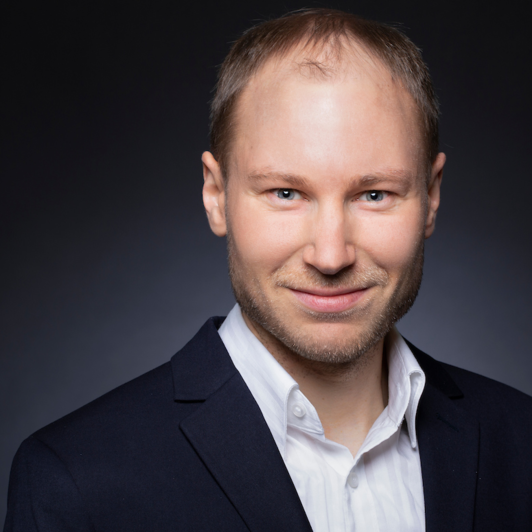
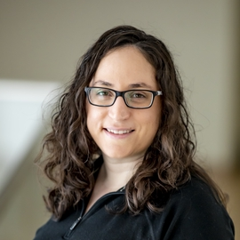

When and Where?
Dates: 5th to 9th of September, 2022
Location: Tübingen, Germany
university building in Keplerstraße 2
Online: via zoom (link in email)
Preliminary schedule
Abstracts of talks, workshops and blitz talks
Speaker talks and workshops.Participant blitz talks.
Recordings and Slides
Find the recordings on our youtube channel.The slides of some of our speakers can be downloaded here.
Speakers by topic
Decision making

|
Peter Dayan |
|
Stephanie Chan |
|
|
Ishita Dasgupta |
|
|  |
Falk Lieder |

|
Marcel Binz |
Bayesian modelling of perception

|
Josh Tenenbaum |
|
Janneke Jehee |
|

|
Frank Jäkel |

|
Lydia Hellrung |

|
Tim Kietzmann |
Language modelling
|  |
Noga Zaslavsky |

|
Michael Franke |

|
Ethan Perez |

|
Lars Meyer |